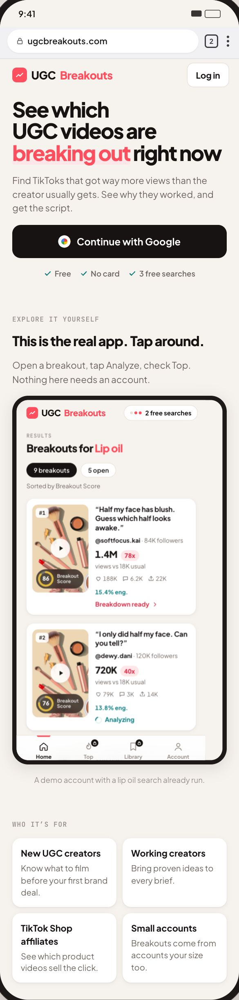
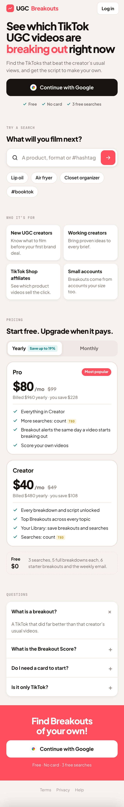
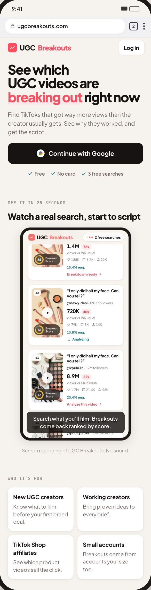
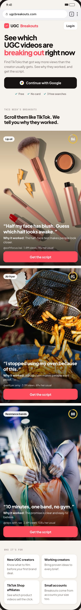

UB sales page: options for the middle
The headline and everything from “Who it’s for” down stay as they are. Five options, each a different way to show the product. Every screen and the video are real captures of the 3.1 app, and each option says what backs it.
What the research says
13 of 19pages show the real product in the first two blocks after the headline
4 of 19let you use the product with no sign up, including Virlo, our closest rival
74%of attention is in the first two screens (NN/g)
1.2 minaverage time on a demo on mobile vs 2.7 on desktop (Navattic)
8 of 19use video, 2 lead with it; video-heavy demos are finished less often (Arcade)
16 of 19show reviews, all from real people; made-up reviews are banned (FTC 2024)
Top 5 options





Before launch
Usage numbers must come from UB’s own data, and the founder note is a draft for Ivan. Reviews only go on once we have real creator quotes with permission.
The 19 sales pages we captured